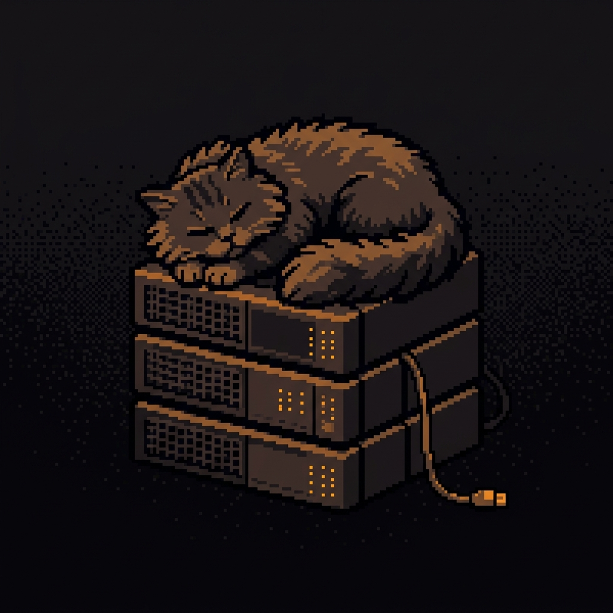
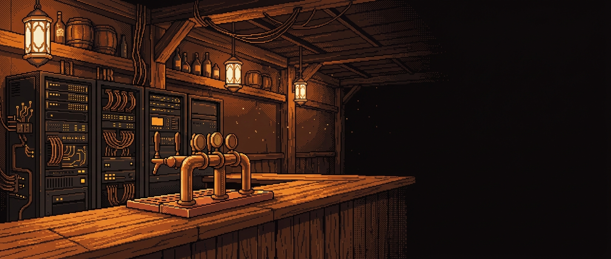
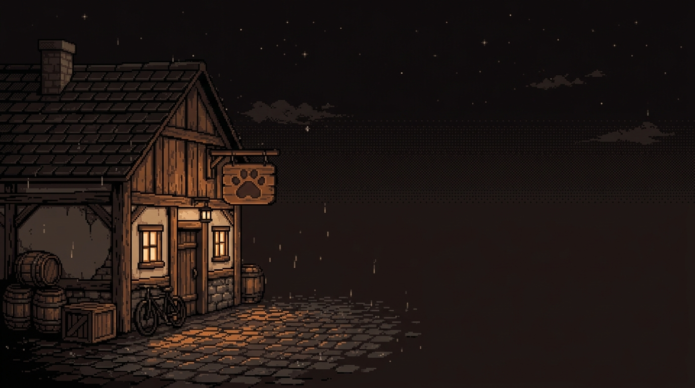

自动容灾
上游返回错误或超时，网关立刻换线重试。调用方看到的只是一次正常返回，不需要自己写重试逻辑。

以下客户端可以直接导入配置，不用手抄地址和 Key
计费分组
站点按分组计费。同一个模型在不同分组下按该分组的倍率折算，21 个模型覆盖 7 个分组，当前全部可用。
数据取自站点价格页，最终扣费以控制台账单为准
路由、容灾、额度、日志、部署，都在同一个控制台里，不需要再拼第三方的胶水脚本。

上游返回错误或超时，网关立刻换线重试。调用方看到的只是一次正常返回，不需要自己写重试逻辑。
按延迟、错误率、余额和权重排序候选线路，模型名保持不变。
|- line A 412ms
request --> route
|- line B 596ms
`- line C 738ms
每把 Key 单独设置计费分组、可用模型与速率限制。
每次调用都有记录，按小时聚合并可导出。
Cherry Studio、OpenCat、Lobe Chat、DeepChat 等可以直接导入配置。
接口、参数、返回结构都与 OpenAI 规范一致。现有 SDK、框架和客户端不用改造，改一行地址就能切过来。
接口路径 POST /v1/chat/completions，与 OpenAI 规范一致
// 之前 const client = new OpenAI({ baseURL: 'https://api.openai.com/v1', apiKey: process.env.OPENAI_API_KEY }) // 之后 const client = new OpenAI({ baseURL: 'https://paoluapi.xyz/v1', apiKey: process.env.PAOLU_API_KEY }) const reply = await client.chat.completions.create({ model: 'claude-opus-4-8', messages })
# 之前 client = OpenAI( base_url="https://api.openai.com/v1", api_key=os.environ["OPENAI_API_KEY"], ) # 之后 client = OpenAI( base_url="https://paoluapi.xyz/v1", api_key=os.environ["PAOLU_API_KEY"], ) reply = client.chat.completions.create( model="gpt-5.6-sol", messages=messages, )
# 之前 curl https://api.openai.com/v1/chat/completions \ -H "Authorization: Bearer $OPENAI_API_KEY" \ # 之后 curl https://paoluapi.xyz/v1/chat/completions \ -H "Authorization: Bearer $PAOLU_API_KEY" \ -H "Content-Type: application/json" \ -d '{"model":"kimi-k3","messages":[...]}'
模型目录
目录随上游更新。新增模型不需要重新申请账号，也不用更换 Key。
| 模型 | 供应商 | 上下文 | 能力 | 分组 |
|---|---|---|---|---|
| gpt-5.6-sol | OpenAI | 1.1M | 推理 工具 多模态 | Codex |
| claude-opus-4-8 | Anthropic | 1M | 推理 工具 多模态 | Claude |
| gpt-6-astra | OpenAI | 1.1M | 推理 工具 多模态 | Codex |
| claude-opus-5-5 | Anthropic | 1M | 推理 工具 多模态 | Claude |
| kimi-k3 | Moonshot AI | 1M | 推理 开源权重 多模态 | KIMI |
| qwen3.8-max | Alibaba | 1M | 推理 工具 多模态 | Qwen |
| gpt-5.6-terra | OpenAI | 1.1M | 推理 工具 多模态 | Codex |
| glm-5.3-flash | Z.AI | 1M | 推理 开源权重 多模态 | GLM |
显示 8 个模型
模型与分组数量随上游更新，以控制台目录为准
账号开通后，跑通第一条请求只需要三步。不用为每家上游单独开户，也不用签长期合约。
用邮箱和密码登录，首次登录需要完成邮箱验证。
入口 /login充值或每日签到领取额度，一份额度覆盖全部模型。
支持每日签到选定分组与可用模型，把地址和 Key 填进现有配置。
base_url = https://paoluapi.xyz/v1